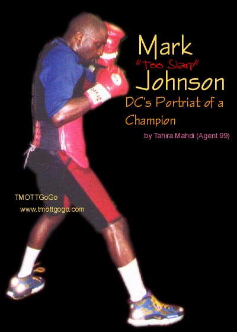
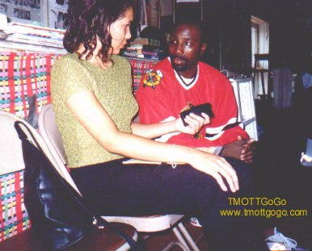

|
Mark
"Too Sharp" Johnson
I could hear the noise coming from Finley’s Boxing Club even before I got to the door. As I walked up the steps, it all hit me – the heat, the loud music, and the thick scent of men’s sweat. Just before I chickened out of a once in a lifetime opportunity, I realized that the music being played was from a Rare Essence PA tape. I immediately felt right at home. There he was, Mark "Too Sharp" Johnson, punching the bag in the center of the room as four men surrounded him yelling. Mark continued to hit hard as they reminded him, "Too Sharp! First African-American flyweight champ!" I walked over and introduced myself to a man sitting down and found that he was Jim Finley, owner of the boxing club. He looked through the copy of the TMOTTGoGo I gave him while telling me his feelings on Mark Johnson. "Mark is very popular. He carries
an entourage of fans wherever he goes, even to Las Vegas. He is definitely
the best in his weight class."
On this particular day, Mark is preparing
for his third fight this year.
Not too many men can look cool when they’re all sweaty and out of breath, but our hero looked too sharp. As I sat and tried not to stare at Mark and the other buffed boxers, I noticed Mr. Ham Johnson. He is Mark’s father, manager, and one of the men who makes sure that Mark makes the most of his training. Upon meeting him, one may mistake
him for being mean and then realize he’s just a man on a mission.
Ham and the rest of the Johnson camp are there to help Mark stay on top
of his game.
"Mark comes into his own… Mark is a naturally gifted fighter. He’s watched a lot of films of old fighters and really admired one of the greatest, Sugar Ray Robinson. But, Mark is unique because he has his own style." The date was Wednesday, September 2nd, just two days before Mark’s fight against Jose’ Laureano in Atlantic City. The walls in Finley’s Gym are covered with pictures of boxers, all shapes, sizes and shades. While I was checking out the boxers in the pictures, Mr. Finley told me to peep the many signs strategically posted around the gym. These signs, written by Mr. Finley himself, are words of encouragement, advice, and rules of the club. One sign tells club members that they can bring in their video tapes to share with others as long as they don’t brag about their wins or complain about their losses (i.e. "I slipped," "I was tired," etc.). You won’t hear Mark Johnson making excuses for talking an ‘L’. He doesn’t even brag about how good he is, and he doesn’t have to. The record speaks for itself. He has won 35 consecutive fights and is now 36-1 as a professional. When he fought Luis Rolon in July, he defended his IBF flyweight title by winning every round on all three judges’ cards. When asked about his predictions for the September 4th fight, Johnson had a very positive outlook. "I’m very focused for this fight. I got criticized for my last fight because I bruised both of my knuckles and I tended to plan more than fight. I want to let people know that the thing for me is getting the ‘W’. If this guy’s a great opponent, it’ll be a boring fight. I want everybody to know that I’m ready and I’m bringing it home." Watching Mark "Too Sharp" Johnson train is almost as exciting as watching the Southwest, D.C. native stagger his opponents in the ring. I saw Mark work out on the punching bag and also practice in the small ring in back of the gym. After every segment of the workout routine, trainers would pour water over him before be began the next one. The most amazing thing was when he stretched out on his back and kept a straight face while a trainer bounced a medicine ball on his stomach over and over. "My style changes in the ring according
to how my opponent fight," explains Mark. "But, I prepare for each
fight the same way. Preparation is getting up in the morning,
coming to the gym, roadwork, getting a good night’s rest, and most important,
no sexual activity. Preparation is the hardest thing. The fight
is the easiest."
Chris Ray, a former amateur boxer, explained to me as I watched, "You can’t have the same style fighting different opponents because someone is always studying you and watching your tape." Before he retires from boxing, Mark wants to fight Johnny Tapia and move up in his weight class. He’s currently fighting 112 pounds, but has set a goal to fight 115. The retirement date is set for April, and he will be 27 years old. "If the Johnny Tapia fight doesn’t happen before April, I’ve got major decisions to make. Money is not the aspect. It’s my health. Right now, I’m in great shape and I plan to stay that way. I made the decision (to retire) based upon other fighters who have gotten hurt, who have slurred speech or walk differently. I’m trying to get myself financially set so I don’t have to resort back to fighting." Mark Johnson is very intelligent and goal oriented. A conversation with him can put to rest any stereotypes one may have about boxers or young black men, period. He owns a beauty salon and a barbershop located on South Capitol Street in Southwest, D.C. He has accomplished so much for someone his age, yet he has his life in perspective and doesn’t carry himself as if he’s all about the ‘benjamins.’ "I want to go back to school," states Mark. I want to get my degree so I’ll have something to fall back on. Even if my businesses don’t do well, I will always have a degree where I can go get a 9 to 5. The game has been too good to me. I have a $200,000 home, two Mercedes, and Expedition, but those are material things. The main thing is just getting out of the game in good health." Mark is thankful for his wife and
four children. He feels that they are very important to him and enjoys
giving them the finer things in life. He continues to keep his priorities
in order despite negative energy from people who try to bring him down
with counter-productive actions and comments.
Mark Johnson defeated Jose Laureano in Atlantic City on Friday, September 4, 1998. As a business owner and the first African-American IBF Flyweight title holder, he is the epitome of what we should all be striving for. "I want to show people that you don’t have to make millions of dollars. You’ve got guys that have made trillions of dollars, but don’t have anything today. I make $150,000 each fight, but I want to show you that a little bit of money can go a long way."
|
TMOTTGoGo
Magazine™
Copyright
© 1998 TMOTTGoGo. All rights reserved.
Reproduction
in whole or in part without permission is prohibited.